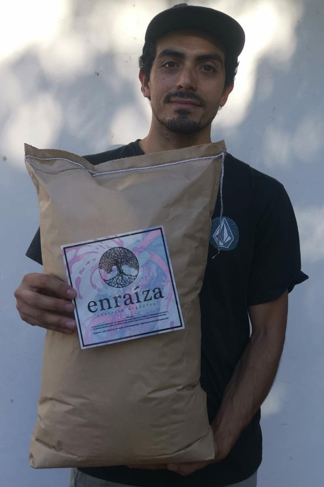
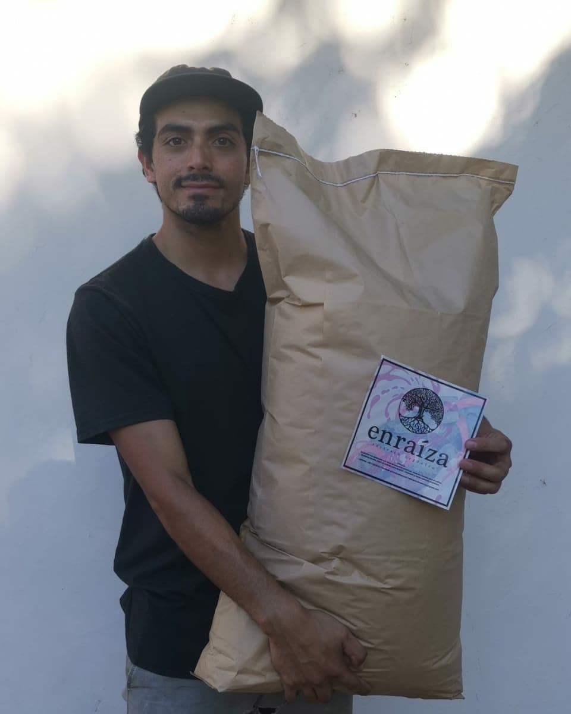
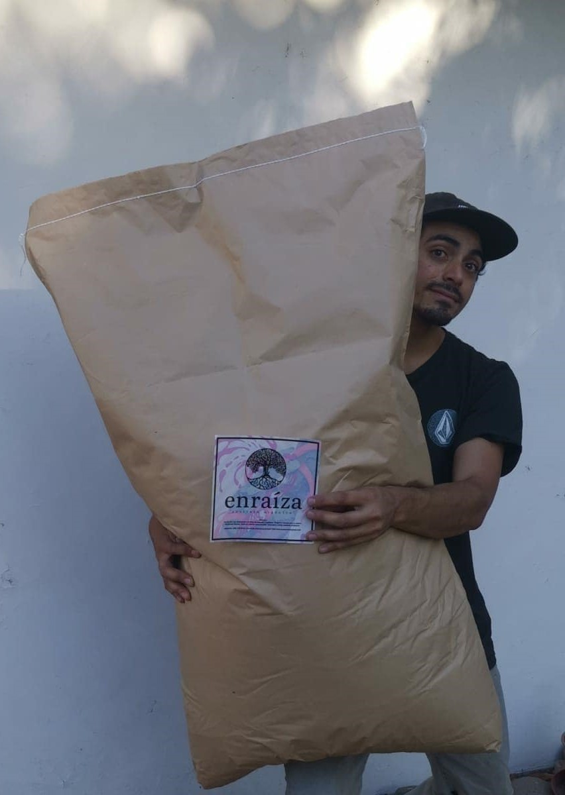

{{ bienvenidos }}
{{ email }}
Productos

Sustrato 25 litros.
Saco de 25 litros, perfecto para transplantar a tu pequeña planta en crecimiento.
Agregar al carrito

Sustrato 50 litros.
Saco de 50 litros, ideal para transplantar tu planta de mediano tamaño.
Agregar al carrito

Sustrato 100 litros.
Saco de 100 litros, magnifico para transplantar a tierra a tu gran planta favorita.
Agregar al carrito